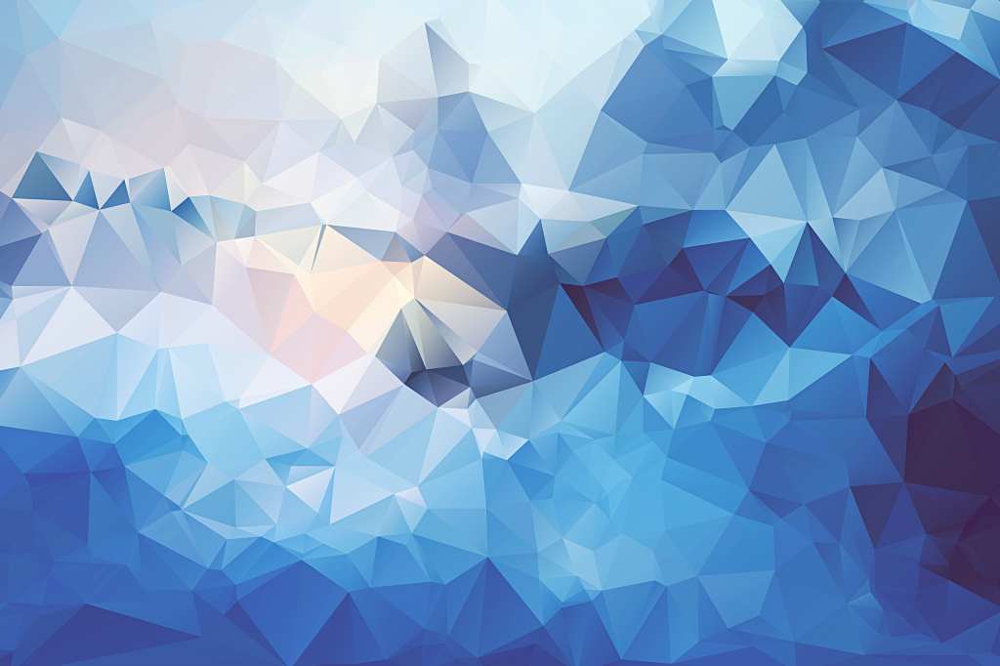

Наши приключения начались еще в аэропорту 13 ноября (число то какое!)...наш рейс на Краснодар был отменен из-за тумана и мы прокуковали в Домодедово более 10 часов, но ночью таки улетели и, что немаловажно, приземлились:) Краснодар встретил нас туманом и зелеными деревьями от чего я была слегка, как зачарованная....сочная зеленая листва в ноябре это круто)
В Краснодаре мы поселились у Нади-Lifa и ее прекрасной семьи и жили у ребят все время пока были в Краснодаре. Узнали о такой республике, как Адыгея и еще много интересного.
15 ноября был наш первый МК в Новороссийске. Автобус на Новоросс был в 7.20 утра 15.11, а так как спать мы легли только в часика 3 утра, естественно утром проснулись так минимально поздно и поэтому мужу Нади пришлось поиграть в фильм «Такси» когда он вез нас на вокзал...незабываемая поездочка была, но на автобус мы таки успели и отрубились в нем практически сразу еще не выехав за пределы Краснодара, а проснулись только в Новороссийске и открыли рты от изумления...ГОРЫ! Море! Если честно от восторга у меня перехватило дыхание....я давно не видела ничего более красивого...как же я люблю горы и море, вы даже не представляете! О Новороссийске остались пожалуй самые теплые воспоминания и туда мы вернулись потом еще раз после основных МК и обязательно приедем снова в сентябре, тем более, что и едем мы туда уже как домой...Аня, девушка, которой принадлежит магазин-студия в котором проводили МК, оказалась невероятным человеком...знаете, бывает такое, что живешь и не подозреваешь о существования некоторых людей, а потом встречаетесь совершенно случайно (хотя я знаю, что случайностей НЕ бывает) и возникает ощущения, что знакомы, как минимум пол жизни...вот так было с Аней и ее мамой...общение без слов, пожалуй это был тот случай, когда люди совершенно настроены на одну волну и слова просто не нужны и ощущения такие были не только у меня, Вова тоже самое сказал:) Сами МК в Новороссийске прошли на УРА в буквальном смысле слова! Это было невероятно важно для нас, т. к. этот город был первым и мы хотели, чтобы все было просто на высшем уровне...может это прозвучит нескромно, но нам это удалось...все кто к нам пришел остались довольны и потом пришли еще раз на уже не запланированные заранее МК и ждут нас снова в сентябре)))
Про красоту города Новороссийска можно писать бесконечно...море...там такое голубое море и горы вокруг, но все же главное достояние города — это его люди. Я правда, даже не буду пытаться описать словами, как нас приняли, с каким радушием, с какой теплотой...знаю только, что я бесконечно благодарна судьбе, за то что она занесла нас туда...